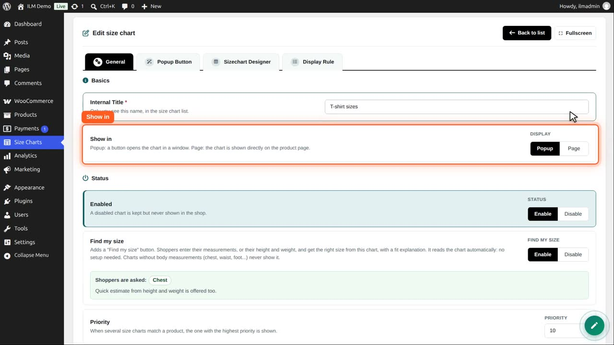
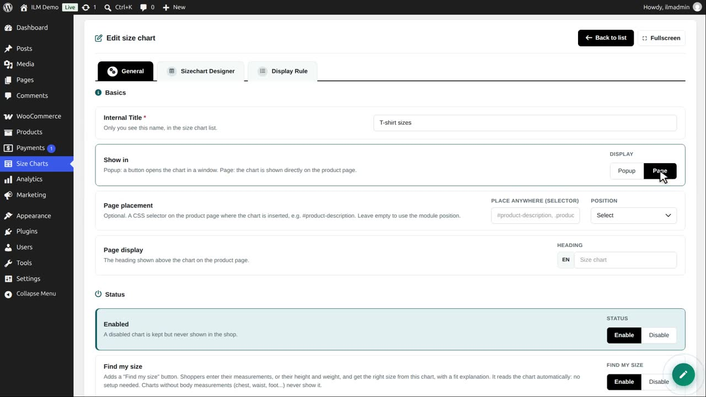
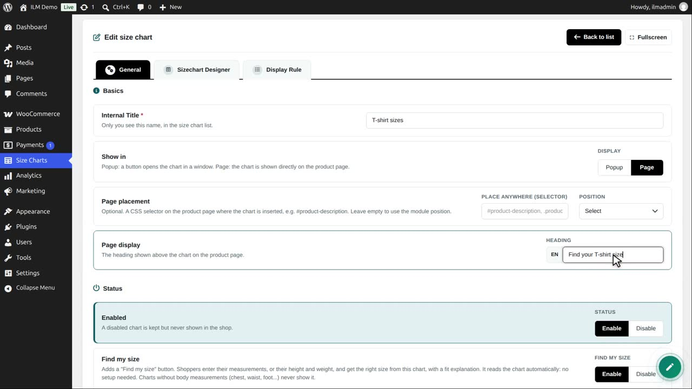
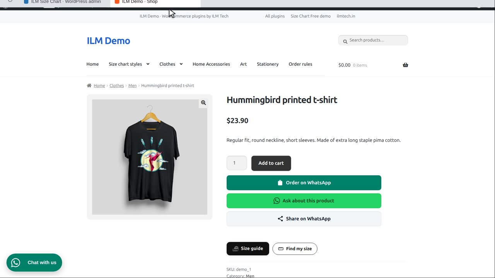
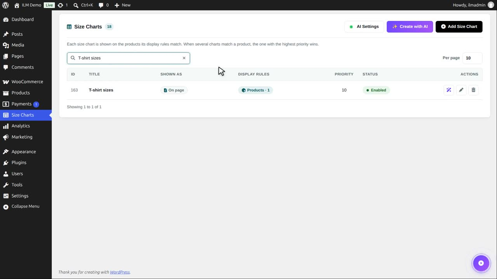
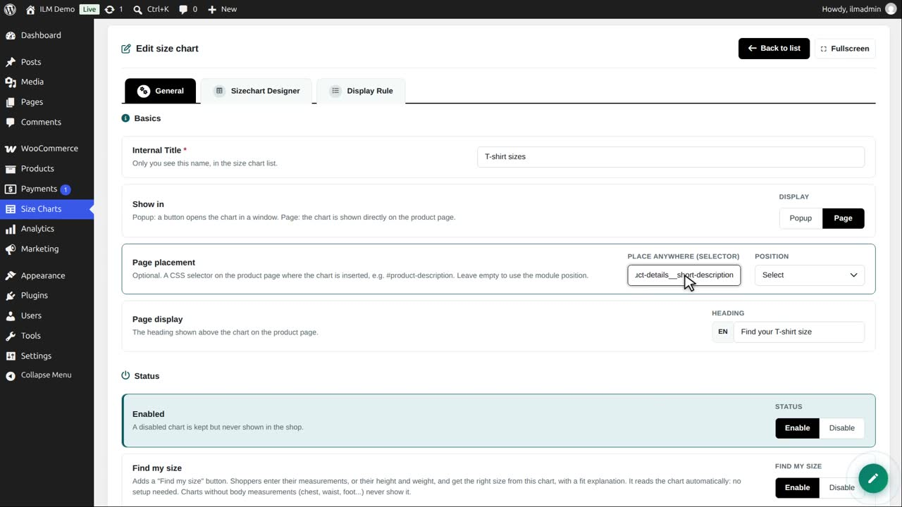
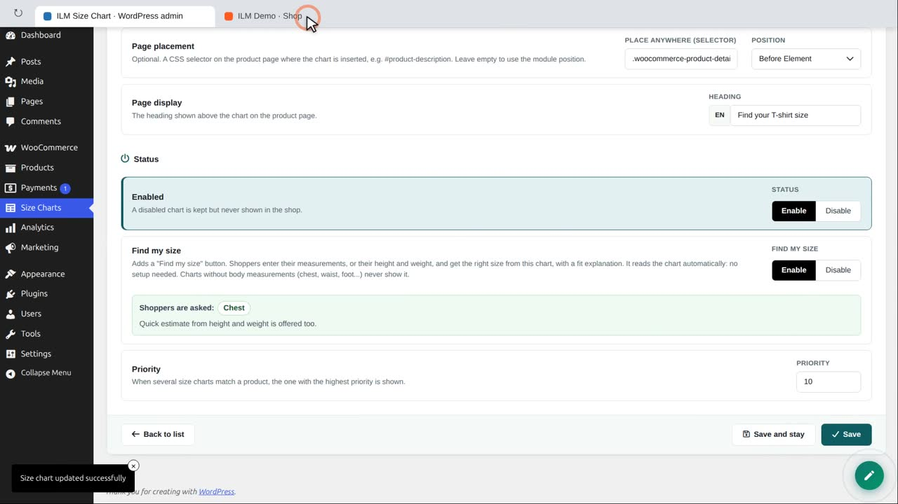
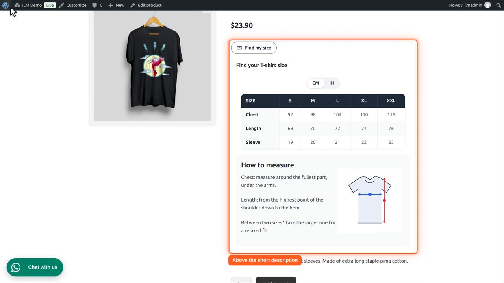

| Field | What it does |
|---|---|
| Show in | Popup: a button opens the chart in a window. Page: the chart is shown directly on the product page. |
With Show in = Page, two more settings appear and the Popup Button tab is hidden:
| Field | What it does |
|---|---|
| Page placement | Optional. A CSS selector on the product page where the chart is inserted, e.g. #product-description, and whether it goes before or after that element or its content. Leave it empty to use the plugin position. |
| Page display — Heading | The heading shown above the chart on the product page. Empty: the words Size chart. |
This T-shirt shows its chart as a popup: a button that opens a window. Let us show it directly on the page.
In WordPress admin, edit the T-shirt sizes chart. On the General tab, Show in decides how the chart appears.

Click Page. Two more settings appear. Page display is the heading shown above the chart.

Type the heading. It is shown above the chart on every product that uses it.

Page placement is optional. Leave it empty, and the chart goes to the plugin position, under the add to cart button.

Save and stay, then reload the product page. The chart is now part of the page, with its heading, its unit switch and its table.

To put it somewhere else, type a CSS selector of your theme in Place anywhere. Here: the short description of the product.

Position says where, compared with that element: before it, after it, or inside it at the start or the end. We choose Before Element.

Save again and reload the shop. The chart now sits just before the short description.

Every chart has its own setting, so one product can show a popup while another shows its chart on the page.